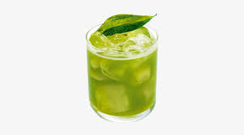

GIN BASIL

Gin basil is a cocktail that typically consists of gin, fresh basil leaves, lime juice, and simple syrup.
Ingredients
- 5 leaves fresh basil or more
- 3 fluid ounces gin
- 1 ½ fluid ounces pineapple juice
- ¾ fluid ounce lime juice
- ¾ fluid ounce simple syrup
- ½ cup ice as needed
- ¼ cup club soda, or as needed
Steps to Make It
- Muddle basil in gin in the bottom of a cocktail shaker.
- Add pineapple juice, lime juice, simple syrup, and ice.
- Cover and shake until the outside has frosted.
- Strain into a highball glass over ice and top with club soda.